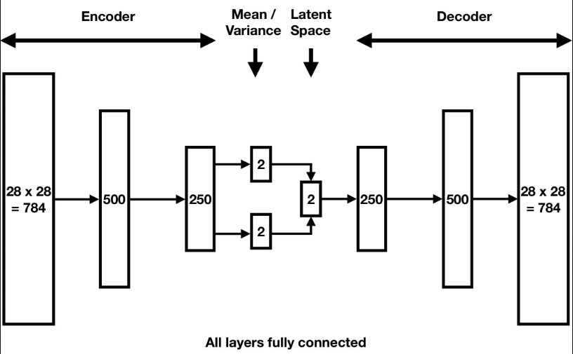
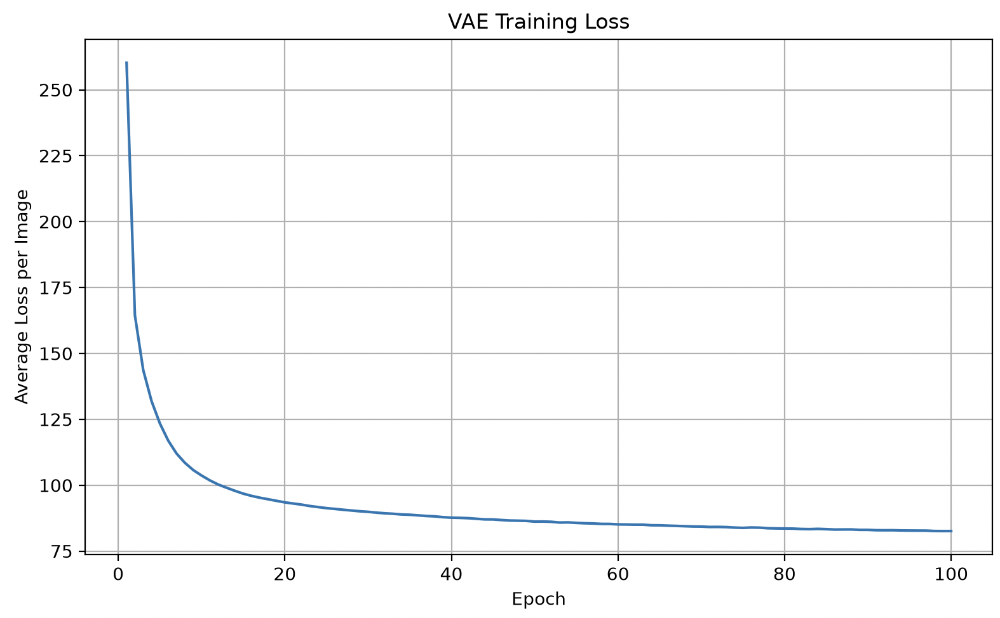
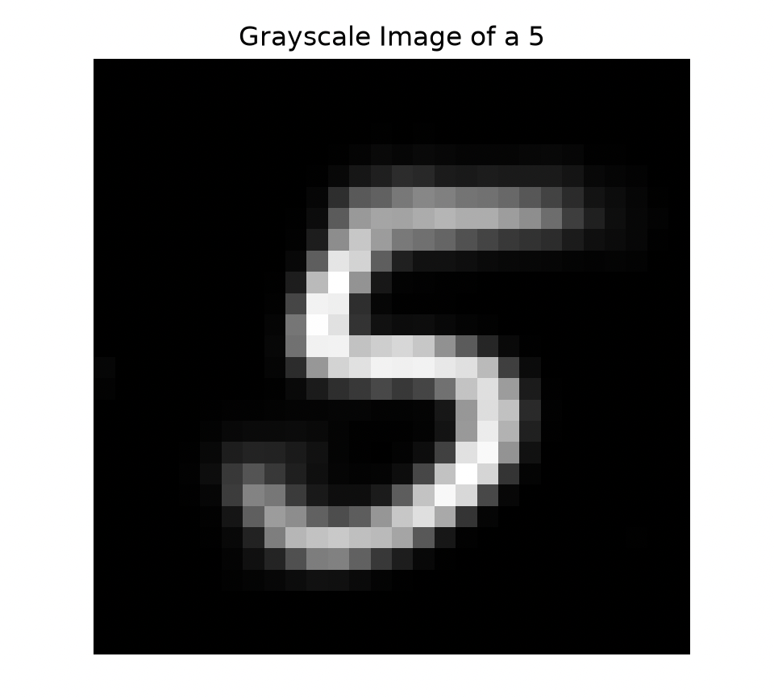

MACHINE LEARNING / GENERATIVE MODELLING
Developed a Variational Autoencoder (VAE) using PyTorch to generate handwritten digit images, exploring neural network architectures, latent space representations and probabilistic generative modelling.
Developed a generative machine learning model using a Variational Autoencoder (VAE) trained on the MNIST handwritten digit dataset.
The model learns a compressed probabilistic representation of handwritten digits, allowing new digit images to be generated by sampling from a learned latent space.
The implementation allows the user to select a specific digit from 0 to 9 and train a dedicated generative model using images belonging to that class.
Implemented a fully connected Variational Autoencoder consisting of an encoder, a probabilistic latent space and a decoder.

Implemented the training pipeline using PyTorch, with the MNIST dataset loaded and filtered according to the selected digit.

After training, the decoder can generate new handwritten digit images from sampled latent representations.
By learning the underlying distribution of the selected digit class, the model can produce variations in handwritten digit appearance rather than simply reproducing training examples.

Python · PyTorch · Variational Autoencoders · Neural Networks · Generative Modelling · MNIST Dataset · Latent Space Representation